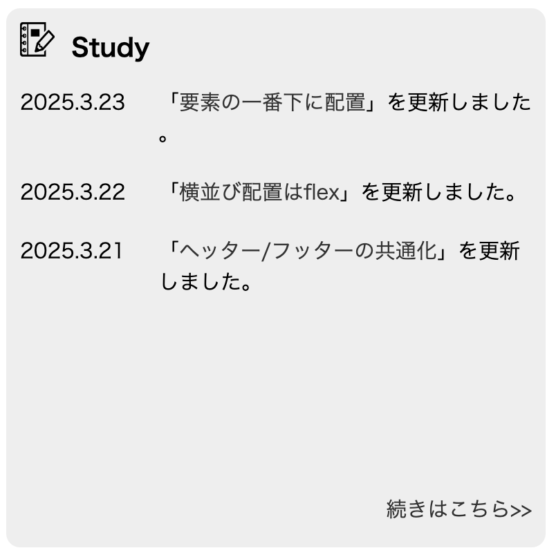

要素の一番下に配置
このHPを更新しているとき、画像のようにHomeページのUpdatingの「続きはこちら>>」のリンクを枠内の一番下に移動した。 まずはこの設定方法から説明していく。 特定の範囲の一番下に部品を配置する手順は以下のとおり。 1. 基準となる範囲（画像でいうグレーの範囲）のcssにposition: relative;を指定 2. 配置する部品（画像では「続きはこちら>>」）のcssにposition: abusolute;を設定 3. 基準となる範囲のどの位置に配置するかは"bottom: 0;"、 "right: 0;" のように指定する。

<!--指定する範囲となる要素-->
<div class="menu">
<!--menuクラスの範囲の一番右下に配置したい子要素-->
<a class="link_btm_rgt" href="study.html">続きはこちら>></a>
</div>
/* 親要素（基準となる範囲）*/
.menu {
position: relative;
}
/* 親要素の中のどの位置に配置するか指定 */
.link_btm_rgt {
position: absolute;
bottom: 20px;
right: 10px;
}
またpositionには上記以外にもオプションがある。今回は使わないので概要だけまとめとく。
範囲を限定せず、画面全体に対して位置が指定される。スクロールしても固定された場所にとどまる。ヘッダーとかに使用されることが多い。
デザインソフトなどでいうレイヤーの重ね順を設定できる。 どのpositionを表面に表示するか数字で指定できる。数字が大きいほど重なった時に一番上に表示される。
スクロールした際、特定の範囲内でのみ固定された場所に留まり、範囲を抜けるとスクロールと一緒に動く。 よくネット記事とか読むときについてくる邪魔な広告とかはこれかな？ たとえば、containerやmainの範囲ではスクロールしても固定された位置に留まってて、フッターまでいくと消えたり。
この後、navを画面に固定する設定をしたとき、position: sticky;を使いました。 まとめたページはこちら
以上。 また使うときがあったら詳しく調べてみようかな〜